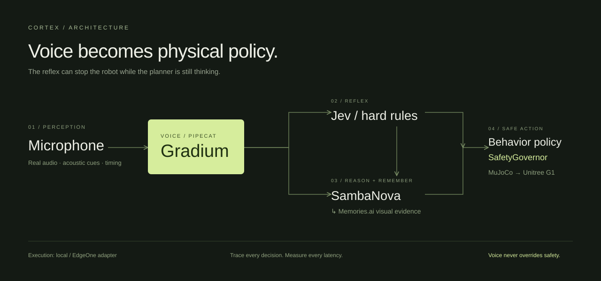
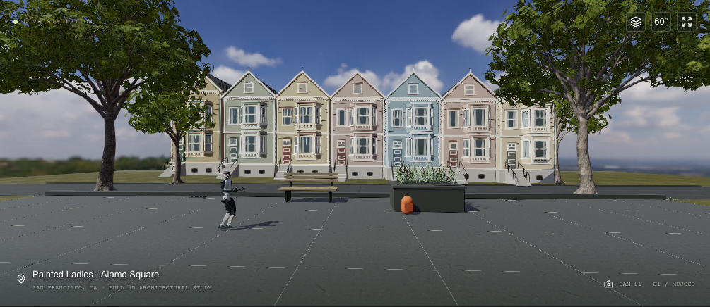

The same words.
A different voice.
A different physical response.
Normal priority · measured approach · 1.2 m space
Higher priority · faster approach · shorter response

A remembered frame becomes a place the robot can return to.

Then: “Take me there.”